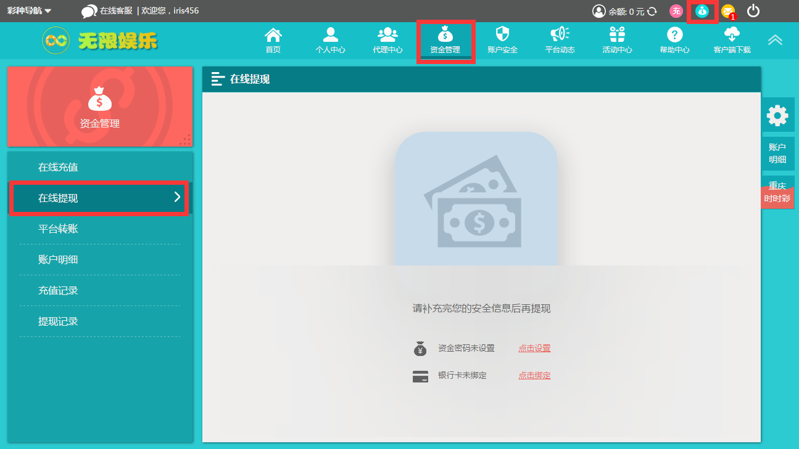
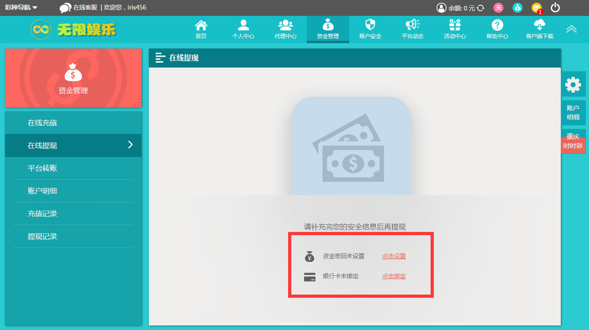
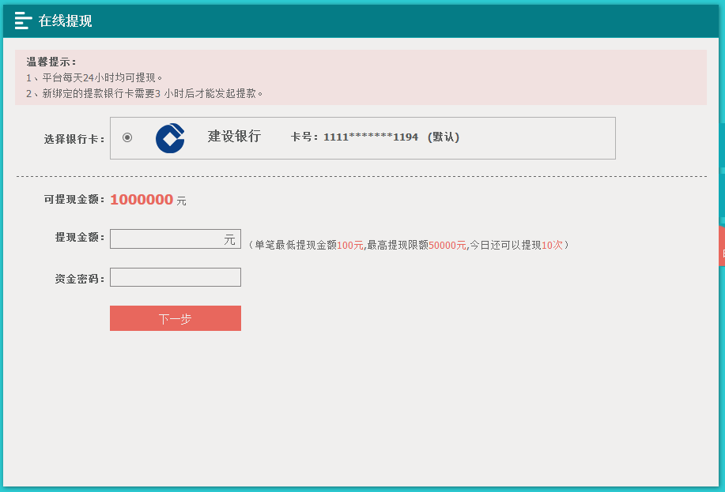
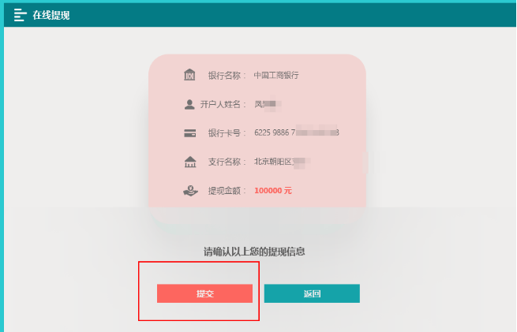
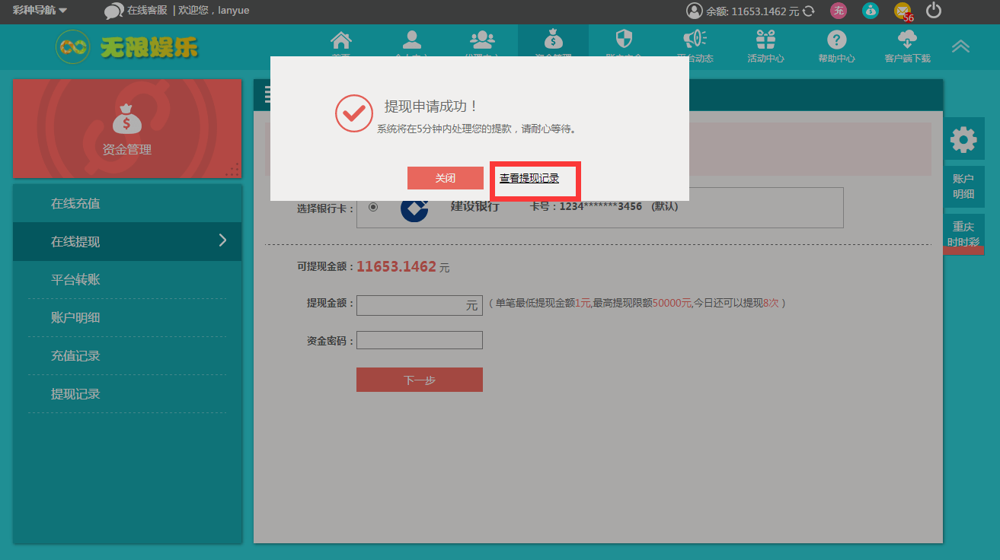
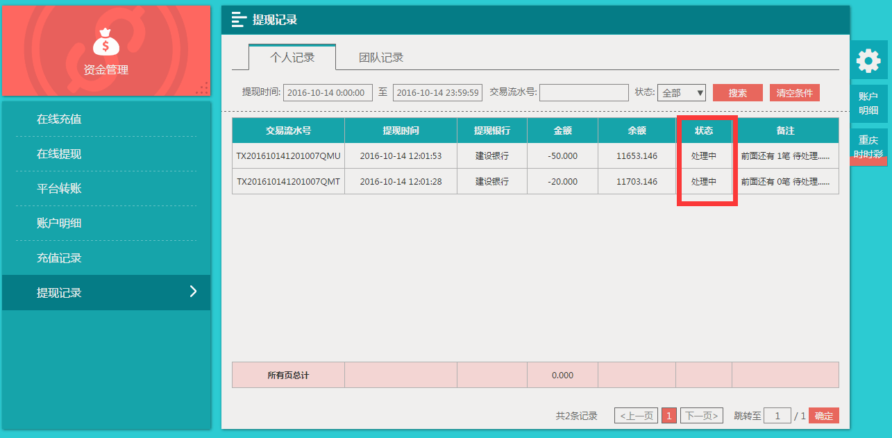

第一步：点击页面顶部提现按钮或者点击导航资金管理>在线提现进入提现页面。

第二步：提现必须要先设置资金密码和绑定银行卡。

第三步：完成相关设置后进入提现页面，填写要提现的金额和资金密码，点击“下一步”。

第四步：在下方点击【提交】按键最终申请提交。 在操作确认弹出窗口内点击【确认】按键来提交您的订单以工商银行为例

第五步：申请提款成功后，您提款的金额将会处于冻结状态，可进入提现记录查看您的提款状态。提款状态显示成功后，可登陆银行确认到账。

